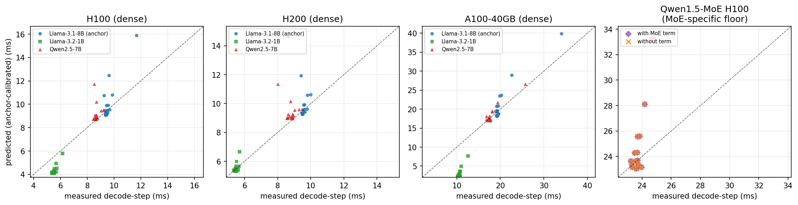

A closed-form calculator predicts one decode step of LLM generation, calibrated once on Llama-3.1-8B, claiming its GPU efficiencies are derived from hardware rather than fitted to the model. If true, swapping only the architecture numbers should predict a different model for free. We test that promise on a 1B model, a 7B model, and a mixture-of-experts model — and report exactly where it holds and where it breaks.
A mechanism model predicts the per-token decode latency of an LLM by summing, from first principles, how long each kernel takes given the GPU's compute and bandwidth limits. Because it was calibrated once on Llama-3.1-8B and claims its GPU efficiency constants are properties of the silicon rather than of the model, it should predict a different model just by swapping in that model's shape — its hidden size, intermediate width, layer count, and attention heads. This study freezes every efficiency constant, swaps only the shapes, and asks a blunt question: does the prediction still hold for a different family? The answer requires separating two quantities the original claim quietly merged — the GPU-compute shape and the absolute step latency, the latter of which also carries a host floor.
Swapping Llama-3.1-8B's shapes for Qwen2.5-7B's — a wider SwiGLU intermediate and more grouped-query sharing — and freezing every efficiency, the GPU-compute branch predicts Qwen2.5-7B to a pooled 5.5% residual, below the anchor model's own 8.4%. The tensor-core and bandwidth efficiencies carry across same-class dense families with no strain. This is the one clean fit-free transfer.
The full step also carries a per-step host floor, which is a one-parameter fit rather than a fit-free quantity, and it depends on model size. Applying the 8B's calibrated floor to a four-times-smaller Llama-3.2-1B worsens the fit, from 48.5% to 71.2% on A100-40GB. The 1B's own self-floor recovers 5.36%, consistent with the GPU-compute shape being correct and the floor being wrong.
For the Qwen1.5-MoE mixture-of-experts model, the modeled expert-dispatch term is negligible at about 0.004 ms, the GPU-compute shape matches only on average at 5.7% (which hides a 34.6%-off long-context cell), and a MoE-specific host floor about 18 ms above dense is entirely unmodeled. The MoE claim is bounded hard.
The paper does not claim pure shape substitution predicts absolute decode latency. It claims the narrower, verified thing: the GPU-compute shape is fit-free across same-class dense families, and it maps exactly where the host floor breaks that for absolute latency and for MoE.
No background is assumed, so the section first establishes the four ideas the rest of the page depends on: what a decode step costs, what a mechanism model is, what makes it fit-free, and what a host floor is. Each builds on the previous one.
To write one token, an LLM runs its forward pass once: per layer, a few matrix multiplications for the projections, an attention computation, and small elementwise steps. Two physical limits govern the time. When the batch is small, the GPU spends its time streaming the model's weights from main memory, so it is bandwidth-bound and a larger model is slower. As context grows, attention must read an ever-larger KV cache, and that read cost grows too. A good latency model has to capture both — the weight-stream floor set by model size, and the KV-growth slope set by how many attention heads share keys and values.
Most latency predictors are fitted: a model is run many times, a curve is fit to the measurements, and that curve works only for that model. A mechanism model is different, because it computes the time from first principles, dividing how many floating-point operations and bytes each kernel needs by how fast the GPU can supply them. The model here writes one step as the formula below.
The first term, $T_{\text{blocks}}$, is the GPU-compute branch — a roofline sum over every kernel that uses the GPU's efficiency constants. This is the part the paper tests for transfer; the remaining additive terms form the host floor discussed below.
The model claims its efficiency constants — a tensor-core occupancy ceiling, a DRAM-streaming efficiency, and a FlashAttention softmax-amortization curve — are architecture-derived: they describe the GPU rather than the model. If that is true, a brand-new LLM can be predicted by feeding in just its shape (hidden size, intermediate FFN width, number of layers, and the grouped-query ratio — how many query heads share one set of keys and values) while freezing everything else. No re-fitting. That is the fit-free promise the paper puts on trial, illustrated below.
The fit-free promise: calibrate the GPU constants once, then predict any model by swapping in its shape. The experiment measures how far that actually travels.
A real measured step is not only GPU compute. The serving protocol carries a per-step host floor — a non-overlapped CPU and runtime overhead that sits under every step. The model handles this with one additive offset per GPU, regressed against measured step times. That offset is a one-parameter fit rather than a fit-free quantity, and, as the paper shows, it depends on model size. That is the seam where fit-free comes apart for absolute latency.
The method re-expresses the predictor over a small shape struct, adds two closed-form pieces for the mixture-of-experts case, and reports two error numbers per cell so shape transfer can be separated from the absolute floor.
The predictor was re-expressed over a small ModelShapes struct, verified to reproduce the original Llama-3.1-8B predictor bit-for-bit, so the only thing that changes between models is the shape. For the mixture-of-experts model the method adds two pieces with no new fitted constant: a single closed-form expert-dispatch term covering the router and the gather/scatter, and an effective-expert-width FFN scaling where the per-token FFN work is driven by the true active width $k\cdot I_e + I_s$ (the top-$k$ routed experts of width $I_e$ plus the always-on shared expert of width $I_s$), rather than a crude fraction of the dense width. Both pieces are derived from the architecture, so neither introduces a parameter fit to MoE measurements.
The crucial honesty control is the two-number report. Each cell carries both the raw MAPE — computed with no offset and therefore dominated by the host floor — and the residual MAPE, computed after subtracting one host-floor offset calibrated from the anchor model alone and then applied unchanged to every other model. The residual isolates GPU-compute shape transfer from the absolute floor. It is an inferred validation of the shape rather than a direct measurement, because a single scalar floor can also absorb other additive, model-dependent errors, so a small residual is consistent with but does not prove an exactly correct GPU-compute branch. The calibrated offsets are +1.6 ms on H100, +3.0 ms on H200, and minus 2.4 ms on A100-40GB.
In the table, each cell is raw / residual MAPE: the offset-free error, which the host floor dominates, and the error after subtracting the anchor-calibrated host-floor offset. The raw error is large even for the anchor (15 to 30%), direct proof that the absolute floor does not transfer for free, while the residual columns isolate the GPU-compute shape transfer that does.
| Model | H100 (raw/resid) | H200 (raw/resid) | A100-40 (raw/resid) | Pooled resid |
|---|---|---|---|---|
| Llama-3.1-8B (anchor) | 15.9 / 8.0 | 29.7 / 8.8 | 16.5 / 8.5 | 8.4 |
| Qwen2.5-7B | 14.9 / 5.8 | 28.3 / 6.9 | 15.5 / 3.9 | 5.5 |
| Llama-3.2-1B | 50.4 / 21.8 | 54.6 / 3.3 | 48.5 / 71.2 | 32.1 |
Anchor host-floor offset δ (ms): +1.6 / +3.0 / minus 2.4 (itself a fit). Residual MAPE isolates GPU-compute shape transfer.
The figure below shows the measured-versus-predicted decode step for each model on each SKU. In the three dense panels, the points cluster on the diagonal once the anchor-calibrated shape is applied; in the fourth panel, Qwen1.5-MoE sits off-diagonal and the modeled dispatch term (orange) barely moves the prediction, exposing the unmodeled MoE floor.

Measured vs anchor-calibrated predicted decode step (ms). Panels 1–3 (H100, H200, A100-40GB) show the dense models — Llama-3.1-8B anchor (blue), Llama-3.2-1B (green), Qwen2.5-7B (red) — clustering on the diagonal. Panel 4 (Qwen1.5-MoE on H100) compares the prediction with the MoE dispatch term (purple) against without it (orange): the term is negligible, and the points sit above the diagonal, the unmodeled MoE host floor.
Qwen2.5-7B's GPU-compute shape transfers to a pooled residual of 5.5%, below the anchor's own 8.4% on every SKU. Its wider SwiGLU intermediate and higher grouped-query ratio are captured by the shape substitution to within the anchor band, so the frozen tensor-core and DRAM efficiencies carry across this family with no strain. This is the one clean fit-free transfer the paper claims — and it is claimed only for the GPU-compute shape, not for absolute latency.
Pooled residual MAPE. The sibling 7B transfers below the anchor; the four-times-smaller 1B diverges, but the cause is the host floor, not the GPU shape (see below).
Llama-3.2-1B is mixed and, on A100-40GB, diverges — which is itself the finding. Its residuals are 21.8% on H100, 3.3% on H200, but 71.2% on A100-40GB, pooling to 32.1%, and the full row is reported rather than the favorable SKU. The divergence is consistent with a model-size-dependent host-floor effect rather than an efficiency-constant failure. The 1B's GPU-compute branch is only about 2 to 5 ms, so its roughly 10 ms measured step is almost entirely host floor; the anchor's A100-40GB offset is negative at minus 2.4 ms because the larger 8B's compute slightly over-predicts there, and applying it to the tiny-compute 1B worsens the fit from 48.5% to 71.2%. Giving the 1B its own self-calibrated floor of +5.65 ms collapses the residual to 5.36%.
For Qwen1.5-MoE the modeled expert-dispatch term is negligible at a median 0.004 ms and does not move the residual, because the measured MoE step of about 23.5 ms (nearly flat in batch and context) is dominated by a host floor far larger than the dense one. Giving the MoE its own self-floor of +19.6 ms — which is +18 ms above the dense H100 floor and is itself a per-model fit — brings the average GPU-compute-shape MAPE to 5.7%, but that average hides the long-context cells: the (16, 8192) cell is 34.6% off, with a predicted 33.2 ms against a measured 24.7 ms. The MoE claim is bounded hard: the GPU-compute shape is only an approximate match, it requires a large unmodeled MoE-specific host floor that does not transfer from dense, and long-context MoE cells are not well predicted.
Even where the absolute level breaks, the shape substitution predicts the right ordering and slopes — the evidence a scalar floor cannot manufacture. The measured small-batch floor scales with model size on every SKU, so on H100 the 1B at 5.4 ms is below the 7B at 8.7 ms, which is below the 8B at 9.4 ms, the order the model predicts from shape. The measured context slope tracks the grouped-query ratio: on A100-40GB the long-context rise is +14.8 ms for Llama-3.1-8B but only +8.4 ms for the higher-sharing Qwen2.5-7B and +1.9 ms for the narrow-head Llama-3.2-1B — exactly the KV-byte ordering the shape model implies. These orderings transfer because they follow from the shape inputs alone, independent of the per-model floor.
The practical reading divides into a reuse rule and a recalibration rule. The GPU-compute shape can be reused for free within a same-class dense family, while the absolute floor must be recalibrated whenever the model size or architecture changes materially.
Within a same-class dense family, swapping shapes and freezing efficiencies predicts the GPU-compute curve to about 5 to 6% with no per-model fitting. That is a genuine portability gain for the part of the step the model gets right, and it is the result a practitioner can rely on without new measurements.
Absolute wall-clock latency carries a host floor that is model-size and architecture dependent. A four-times size change or a switch to mixture-of-experts breaks the transferred floor. A practitioner should budget one inexpensive recalibration per model class and should not assume the anchor's floor carries over.
A companion deepdive tests the same mechanism model along a different axis, asking whether its host term survives when CUDA-Graph capture removes per-step host overhead — rather than whether its compute shape survives across model families. Read Deepdive #3: Does the closed-form latency mechanism survive CUDA-Graph capture?
The claims are deliberately scoped. Each item names a specific way the result could be over-read and the precise scope that remains valid.
The conclusions hold for three dense models and one mixture-of-experts model, in BF16 on the single-GPU PACE SKUs H100, H200, and A100-40GB, over the five-by-three decode grid. The headline is a scoped portability statement, not a universal accuracy figure: the GPU-compute shape is the part shown to transfer fit-free within a same-class dense family, while the absolute floor, a four-times size change, and the move to mixture-of-experts each require their own calibration.